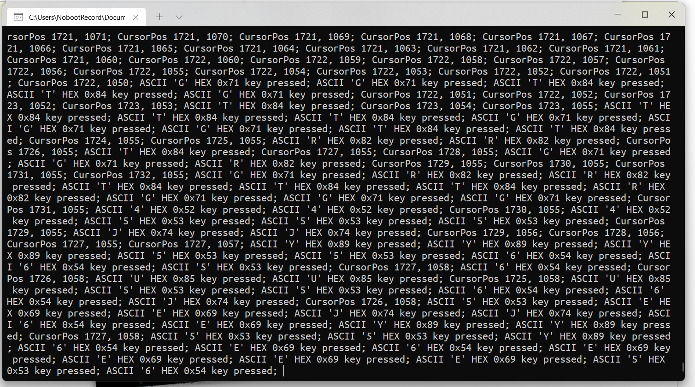

...::: Ivan Movchan's Website :::...
Sample Text
KamstRec (Keyboard and Mouse State Recorder)
Программа для получения сведений о текущем состоянии клавиатуры и мыши. Весьма странная и никому не понятная хрень.

Первая версия программы вышла в декабре 2021 года. Тогда утилита была написана для себя чисто по приколу, но постепенно этот "прикол" превратился в весьма интересную системную утилиту.
В апреле 2022 года я почистил исходные коды программы от всякой фигни и дополнил функционал.
• Версия 1.0 от 21 апреля 2022 года

Copyright © Ivan Movchan, 2021 - 2022. Рекомендуется включить JavaScript в вашем браузере для лучшего eXpErIeNcE.
Электронная почта автора: gogol2k7 at gmail dot com. Powered by GitHub